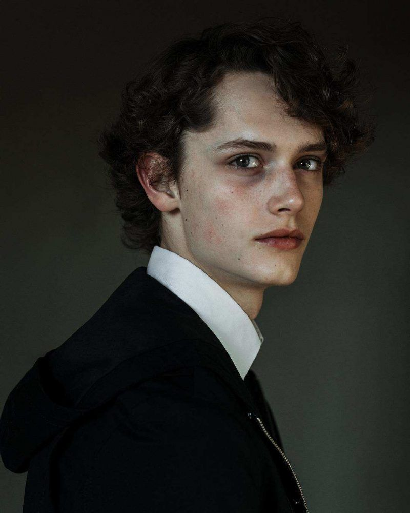
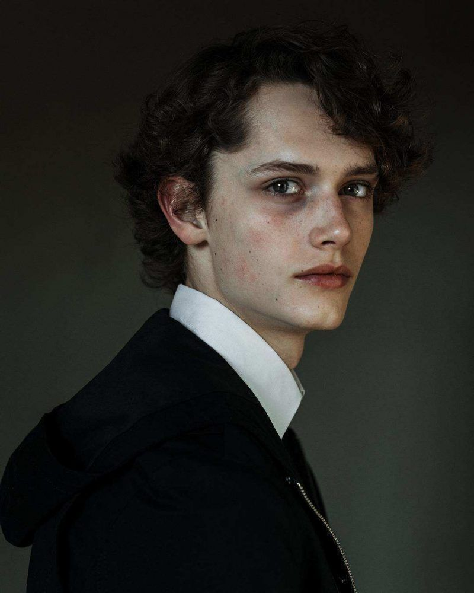

Ivy Mae photography website is considered to be a fashion, portrait and editorial photography content. The range in the content and design of the website is to branch out to smaller and independent designers to work with, to produce photos to local publications, in addition to promote herself online to which most people would love to work with.
Her target audiences are around late teens to late twenties, since most of her content are indented to be focus on photo scenic and fashionable taste for younger audience. However, for a business audience, to engage in the website, the design layout will must capture a unique style that draws them in.


+1012 3456 789
demo@gmail.com
132 Dartmouth Street Boston, Massachusetts 02156 United States